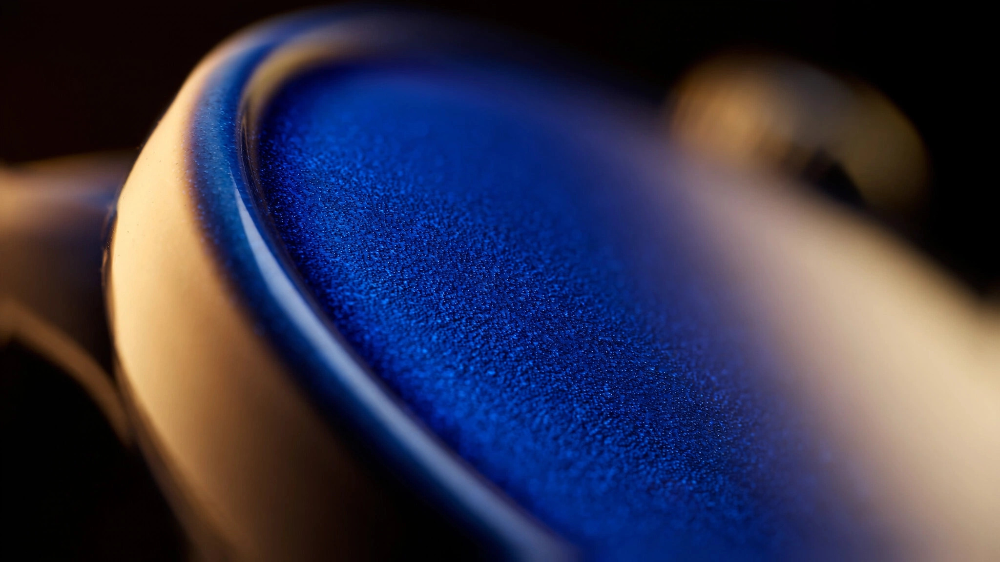

How Hublot Broke the Monochrome Barrier: Spark Plasma Sintering and the Full-Color Ceramic Revolution

Ceramic entered watchmaking as a material of negation: it doesn't scratch like steel, doesn't corrode like brass, doesn't trigger the nickel allergies that plague sensitive wrists locked into stainless cases for days at a time. Rado pioneered its use in the early 1990s with black and white zirconia, and by the 2010s Omega, Chanel, IWC, and a handful of independents had built ceramic into their lineups, yet every one of them shared the same stubborn limitation. The finished product was black, white, grey, or some muted variation thereof. An industry that celebrates artisanal color on dials, straps, and even proprietary gold alloys was stuck with watch cases that looked like they belonged in a dentist's office, and the constraint wasn't aesthetic conservatism. It was physics.
Why Ceramics Resist Color
A ceramic watch case begins as powder. Zirconia (zirconium dioxide, ZrO2) or alumina (aluminum oxide, Al2O3) powder is pressed into a near-net-shape blank, then sintered: heated under pressure until the particles fuse into a dense, polycrystalline solid without melting. Conventional sintering requires temperatures above 1,400°C for zirconia, often reaching 1,500°C to 1,600°C, held for hours. At these temperatures, the ceramic densifies beautifully. Porosity drops below 1%. Hardness climbs past 1,200 HV. But anything added to the powder for the purpose of color has a problem.
Metallic oxide pigments produce color by selectively absorbing wavelengths of visible light: iron oxide yields red, cobalt oxide produces blue, chromium oxide creates green, and these pigments work brilliantly in low-temperature ceramics, which is why terracotta tiles have been red for five thousand years. Sintering zirconia is a different thermal regime entirely, operating hundreds of degrees above the temperatures where many pigments decompose. At 1,400°C and above, metallic oxides can change oxidation state or diffuse into the zirconia lattice in ways that destroy their optical properties. Iron oxide, for example, transitions from hematite (Fe2O3, red) to magnetite (Fe3O4, black) at elevated temperatures in oxygen-poor environments. Cadmium-based pigments that produce vivid yellows and oranges begin decomposing above 800°C. Chromium oxide survives thermally but reacts with zirconia to form chromium-zirconium compounds that shift the color from green toward murky brown.
Black works because its pigment chemistry tolerates heat: carbon inclusions, spinels, or iron-chromium-cobalt compounds remain stable at sintering temperatures, and white works because it requires no pigment at all, since pure zirconia stabilized with yttrium oxide sinters to an opaque white on its own. Grey is a diluted version of the same mechanism that produces black. Beyond these three, the thermal window was closed.
Industry solutions were cosmetic at best. Chanel's J12 Chromatic (2011) used titanium in a ceramic matrix to achieve a metallic grey that shimmered but remained fundamentally monochrome, Omega's Seamaster Planet Ocean Deep Black used plasma treatment to darken zirconia surfaces, and IWC developed Ceratanium, a hybrid of titanium and ceramic, in 2017. None of these addressed the core problem of embedding saturated, vivid color into the ceramic body itself.
Spark Plasma Sintering: Rewriting the Temperature Rules
Hublot's approach was to lower the sintering temperature by hundreds of degrees, not through wishful thinking but through a process that aerospace engineers had already validated on silicon carbide and boron carbide armor panels.
Spark Plasma Sintering, also known as Field-Assisted Sintering Technique (FAST), was developed in the 1990s for advanced ceramics, cermets, and refractory materials. The principle is straightforward: ceramic powder is loaded into a graphite die, compressed under uniaxial pressure (typically 30 to 100 MPa), and then heated by passing pulsed direct current through the die. The graphite's electrical resistance converts the current into heat directly at the surface where die contacts powder, achieving heating rates up to 1,000°C per minute. Conventional sintering furnaces manage 5 to 10°C per minute.
Speed changes everything. Rapid heating means the powder spends less time at intermediate temperatures where grain growth occurs without densification. The applied pressure acts as an additional driving force, squeezing particles together and closing pores mechanically while the surface diffusion bonds them. The combination allows full densification at temperatures 200 to 500°C below conventional sintering. For colored zirconia, this means the ceramic reaches full density at 1,000°C to 1,200°C instead of 1,500°C, and the total time at peak temperature drops from hours to minutes.
That thermal margin is where color lives. A cobalt aluminate blue pigment that decomposes at 1,350°C survives intact at 1,100°C; an iron-doped zirconia that bleaches to pale brown at 1,500°C retains vivid red at 1,000°C; chromium oxide stays green instead of reacting into zirconia-chromium compounds. SPS doesn't change the pigments themselves. It changes the environment around them, preserving their optical properties inside a ceramic matrix that is structurally identical to conventionally sintered material in every dimension that matters: density, hardness, and fracture toughness all meet or exceed conventional benchmarks.
Hublot was not the first to use SPS in an industrial context, since aerospace manufacturers had applied it to silicon carbide armor components and dental ceramics used it to optimize translucency, but Hublot was the first to deploy SPS at production scale specifically for color preservation in a consumer product and the first to build a full SPS facility within a watch manufacture.
Red Magic: The 2018 Breakthrough
Hublot's ceramic program had been running since 2006, when the brand first introduced black ceramic bezels on the Big Bang. By 2013, it had released full ceramic cases in black. White followed. CEO Ricardo Guadalupe publicly stated that colored ceramic was "in our DNA," but the technical reality lagged behind the aspiration until the R&D team in Nyon acquired SPS equipment and began a systematic study of pigment-ceramic compatibility at reduced sintering temperatures.
Red was the target. Not because it was the easiest, but because it was the most commercially dramatic and technically difficult. Red pigments in oxide ceramics are notoriously temperature-sensitive. Achieving a saturated, uniform red in a case-sized ceramic component (44 mm diameter, 14 mm thick, with complex geometry including lug holes and crown guards) required solving not just the pigment chemistry but the sintering uniformity problem: every region of the blank must reach the same temperature at the same rate, or the color will vary from surface to core.
The Big Bang Unico Red Magic, released at Baselworld 2018, was the result. A 45 mm case in vivid, Ferrari-adjacent red ceramic. Not painted. Not coated. Not surface-treated. The color went all the way through the material. Snap the case in half, and the cross-section would be the same shade of red as the polished exterior. Hardness: 1,500 HV, actually exceeding the 1,200 HV of conventional black zirconia. The improvement came from the SPS process itself. Rapid sintering at lower temperatures produces a finer-grained microstructure with fewer voids, and finer grains mean higher hardness. The conventional sintering process, with its longer time at peak temperature, allows more grain growth, and larger grains are slightly softer.
Revolution Watch called it "a major breakthrough in the realm of haute horlogerie," though competitors were skeptical, and more than a few industry insiders assumed the color was a surface treatment that would wear through in a year or two. Hublot invited journalists to scratch the Red Magic case with a steel file. Nothing happened, so they filed a corner to expose fresh material underneath, and it was the same red all the way through.
Expanding the Palette
Once the SPS infrastructure was proven with red, Hublot's materials team began working through the periodic table of metallic oxide pigments. Each color presented unique challenges because each pigment has a different decomposition temperature, a different reactivity with the zirconia matrix, and a different particle size requirement for uniform dispersion.
Yellow arrived next, and it proved even more temperamental than red. Yellow pigments in oxide ceramics are among the most thermally fragile: praseodymium-zirconium silicate, the industry-standard yellow ceramic pigment, begins losing saturation above 1,100°C, which meant Hublot's SPS parameters had to be tuned to an even narrower thermal window. High enough for full densification, low enough that the praseodymium compound retained its bright lemon hue rather than fading to a washed-out cream. The Big Bang Unico Yellow Ceramic was limited to 250 pieces, partly for commercial reasons and partly because yield rates on yellow blanks ran lower than red.
Blue was more forgiving, since cobalt aluminate (CoAl2O4) is one of the more thermally stable ceramic pigments, surviving to approximately 1,350°C before degradation becomes visible, which gave Hublot a wider SPS processing window, faster cycle times, and higher yields. Hublot eventually released blue in multiple shades: a deep navy, a brighter azure, and the petrol blue that appeared on the Spirit of Big Bang.
Green, orange, khaki, beige followed in subsequent years, each requiring its own optimized SPS profile defined by five interdependent variables: heating rate, peak temperature, hold time, cooling rate, and applied pressure. The Nyon facility's SPS machines are not single-recipe tools but programmable multi-stage systems that ramp pressure and temperature independently, allowing the materials team to hit a pigment's thermal sweet spot with precision measured in tens of degrees and seconds of dwell time.
By 2024, Hublot had produced ceramic watch components in more than a dozen distinct colors. No other manufacture came close. Rado, the original ceramic pioneer, offered black, white, and a limited grey-brown (plasma ceramic). Omega's ceramic work remained confined to black and white with some grey. IWC had Ceralume (luminous ceramic, a different technology focused on glow-in-the-dark properties rather than color). Chanel's J12 stayed in black and white. Hublot's in-house ceramic lab had become, quietly, the most advanced color-ceramic facility in the luxury goods industry.
Magic Ceramic: The Multicolor Problem
Single-color ceramic, however complex the pigment chemistry, follows a conceptually simple process: mix powder with pigment, press, sinter, machine. The color is uniform throughout because the pigment is uniformly dispersed in the starting powder. In 2025, Hublot announced something more ambitious.
Magic Ceramic is a single, homogeneous ceramic component containing multiple colors in a controlled pattern. Not painted on. Not inlaid from separate pieces. Not a laminate. A single sintered body with grey base material and vivid blue circular accents that extend through the full depth of the ceramic. Mathias Buttet, Hublot's Director of R&D, described it as "the world's first commercially available multicolored ceramic."
Getting there required solving a problem that single-color SPS avoids entirely. Different metallic oxide pigments have different optimal sintering temperatures. In a single-color blank, the SPS profile is tuned to one pigment. In a multicolored blank, two or more pigments with different thermal behaviors must coexist in the same die, subjected to the same temperature and pressure cycle, and both must survive with their intended colors intact. If the grey matrix pigment needs 1,150°C and the blue accent pigment degrades above 1,100°C, the process window shrinks to essentially nothing.
Hublot's patent-pending solution involves staging the pigments during powder preparation. Buttet told Monochrome Watches that the process uses "coloured pigments (metallic oxides), each of them going through different temperatures during the baking and moulding processes." The blanks are formed with the colors and patterns already embedded in the powder compact before sintering. This implies a pre-patterning step, likely involving layered or regionally deposited powder fills in the die, where grey-pigmented powder occupies most of the volume and blue-pigmented powder is placed in specific zones corresponding to the desired accent pattern.
During SPS, the entire blank experiences the same macro temperature, but micro-thermal gradients exist. The powder-die interface heats first. The center of the blank heats last. By controlling the ramp rate and peak hold, the materials team can create a thermal sequence in which the bulk of the blank reaches full densification temperature while the accent regions, which may be formulated with a slightly different binder-to-pigment ratio or particle size distribution, densify at a marginally different rate that preserves their distinct optical properties. Cut a Magic Ceramic bezel in half and the pattern persists through the cross-section, confirming that the color distribution is volumetric, not superficial.
Only twenty Big Bang Unico Magic Ceramic pieces were produced for the initial release. Yield rates were not disclosed, but a twenty-piece limited edition from a brand that regularly does 250-piece and 500-piece runs suggests that the rejection rate on multicolored blanks was significant.
The Big Bang Reloaded: Color at Full Scale
At Watches and Wonders 2026, Hublot unveiled the Big Bang Reloaded collection. Five permanent-production references and two limited editions. Three of the five permanent models use colored ceramic: an all-black, a vivid blue, and a dark green. The collection is powered by the HUB1280, the latest evolution of the Unico caliber. But the engineering story that distinguishes the Reloaded from every previous Big Bang is its ceramic execution.
Previous Big Bang ceramic references used monolithic ceramic cases. Case, bezel, and pushers were ceramic, but the bezel was a single piece in a single material. The Reloaded introduces a two-part bezel construction that allows Hublot to combine contrasting materials and finishes on the bezel alone: titanium with ceramic, ceramic with ceramic in different surface treatments (polished versus satin-finished), or Magic Gold with ceramic. This mixed-material bezel exploits the dimensional precision of CNC-machined ceramic. Ceramic's near-zero thermal expansion coefficient means a ceramic bezel ring maintains its dimensions regardless of temperature, so the interference fit between the two bezel halves stays tight from a sauna to a ski slope.
Stuff magazine noted that Hublot's colored ceramic is "300 Vickers harder than conventional ceramic," placing the current production material at approximately 1,500 HV. This is consistent with the Red Magic figure from 2018 and confirms that the hardness advantage of SPS-processed colored ceramic is not exclusive to red. Blue and green achieve the same hardness because the improvement comes from the sintering process, not the pigment. The finer grain size and reduced porosity of SPS material produce a ceramic body that is harder than conventionally sintered zirconia regardless of what color the pigment adds.
For context, 1,500 HV is roughly six times harder than stainless steel (250 HV), three times harder than titanium (350 HV), and harder than sapphire crystal along certain crystallographic axes (sapphire's Vickers hardness is approximately 1,800 to 2,000 HV, but varies with orientation and test load). A Hublot colored ceramic case will scratch stainless steel, titanium, and most metals it comes into contact with. Only diamond, sapphire, and a handful of synthetic superhard materials will scratch it.
Manufacturing: Powder to Polished Case
The production chain at Hublot's Nyon manufacture covers every step from raw powder to finished case, all in-house. This vertical integration matters because the color of a ceramic component is determined by the interaction between dozens of process variables, and outsourcing any step risks losing control of the final result.
Powder preparation comes first. Zirconia powder, stabilized with yttrium oxide (typically 3 mol% Y2O3 for tetragonal phase stability), is blended with metallic oxide pigment in precisely controlled ratios. The pigment particle size must be matched to the zirconia particle size. If pigment particles are too large, the finished ceramic will have visible speckling instead of uniform color. If they are too small, they dissolve into the zirconia lattice during sintering and the intended color shifts. Hublot's powder lab uses ball milling with zirconia media to achieve uniform dispersion without contaminating the batch with foreign material.
Pressing follows. The blended powder is loaded into a graphite die shaped to approximate the final case component, then compressed under uniaxial pressure. The result is a "green body," a fragile, chalk-like compact roughly 20% larger than the final part. The oversizing accounts for the volumetric shrinkage that occurs during sintering as pores close and the material densifies.
SPS is the critical step. The loaded die goes into the Spark Plasma Sintering chamber. Pulsed DC current heats the die. Temperature ramps at rates between 100 and 1,000°C per minute, depending on the color and component geometry. Peak temperature, dwell time, and cooling rate are programmed for each specific pigment-zirconia combination. A complete SPS cycle for a watch case component takes minutes, not the hours required by conventional sintering. This speed is not just an efficiency gain; it is the mechanism that preserves color.
Post-sintering, the densified blank is CNC-machined to final dimensions. Ceramic machining requires diamond-tipped tooling because no other cutting material is hard enough to shape the finished ceramic without chipping or cracking. Tolerances are tight. A bezel ring with a 44 mm outer diameter and a case middle with lug recesses, crown-guard cutouts, and pusher holes must mate precisely, with no room for the thermal distortion or spring-back that metal cases tolerate. Ceramic is brittle. A machining error that would leave a cosmetic mark on steel can shatter a ceramic blank.
Polishing is the final step and the most labor-intensive. Ceramic's hardness makes it slow to polish but rewards the effort with a surface finish that steel and titanium cannot match. The polished surface of a Hublot blue ceramic case has a depth and luminosity that comes from the ceramic's internal light transmission properties. Zirconia is slightly translucent, particularly in thinner sections. Light penetrates a few micrometers into the polished surface, interacts with the pigment particles distributed through the material, and reflects back. The result is a color that appears to come from within the material rather than sitting on top of it, a visual effect similar to the difference between a lacquered panel and a gemstone.
What No One Else Has Managed
Hublot's position in colored ceramic is unusual for the watch industry, where technical innovations tend to propagate across brands within a few years. Silicon escapements, for instance, went from Ulysse Nardin's 2001 Freak to Patek Philippe, Rolex, Omega, and dozens of others within fifteen years. Ceramic color has not followed the same trajectory. Eight years after Red Magic, no competitor offers vivid colored ceramic cases.
Part of the explanation is capital investment. An SPS machine capable of producing case-sized components costs well into six figures. The supporting infrastructure, including powder labs, clean-room pressing, programmable sintering chambers, diamond machining centers, is a multi-million-dollar commitment. Rado, despite its ceramic heritage, is part of the Swatch Group, which has not prioritized SPS investment for color. Omega uses ceramic extensively but focuses on performance (antimagnetic properties, Ceragold bezels) rather than chromatic range. IWC's recent Ceralume luminous ceramic follows a different technological path entirely, embedding photoluminescent compounds in the ceramic matrix for glow-in-the-dark performance rather than daytime color.
A deeper reason may be philosophical. Most watch brands treat ceramic as a functional material: hard, light, hypoallergenic. Color is a design problem they solve with dials, straps, and metal alloys. Hublot treats ceramic as a design medium, and has committed the R&D budget to prove the point. Former CEO Ricardo Guadalupe's repeated emphasis on colored ceramic being "in our DNA" is not just marketing. It reflects a genuine multi-year investment in production capability that cannot be replicated by writing a check. The know-how, the SPS process recipes, the pigment-zirconia compatibility database, the yield-rate data accumulated over hundreds of production runs: this is institutional knowledge, and it lives in Nyon.
Limitations and Open Questions
Colored ceramic is not perfect. Brittleness remains the fundamental trade-off. A Hublot ceramic case will never scratch, but it can crack if struck against a hard surface with sufficient force. Zirconia has a fracture toughness of approximately 6 to 10 MPa√m, depending on stabilizer content and microstructure. Steel has 50 to 80 MPa√m. A ceramic watch dropped onto a tile floor from wrist height may survive with no visible damage, or it may crack catastrophically with no intermediate dent or deformation. Steel bends. Ceramic breaks. Hublot mitigates this with case geometry (rounded edges distribute impact forces) and material selection (tetragonal zirconia, stabilized with yttria, undergoes a martensitic transformation at the crack tip that absorbs energy and resists crack propagation), but the material has limits that no amount of engineering can eliminate.
Color consistency across production batches is another challenge. A batch of red blanks sintered with identical SPS parameters will not produce identically colored cases if the starting powder varies by even a fraction of a percent in pigment concentration or particle size distribution. Quality control involves spectrometric measurement of every finished component, and the rejection rate for color mismatch is higher than the rejection rate for dimensional deviation. This is one reason colored ceramic references are often produced in smaller quantities than their metal counterparts.
Magic Ceramic, with its multi-color patterns, introduces additional yield challenges. Each blank must be inspected not just for overall color but for pattern fidelity: are the blue accents in the right positions, with the right size, at the right saturation? A blank that is structurally perfect but has a shifted or blurred pattern is a reject. Twenty pieces for the 2025 debut suggests that the process is still closer to laboratory demonstration than mass production. Whether Hublot can scale Magic Ceramic to permanent-collection volumes remains an open question.
Repairability is the quiet downside. A scratched steel case can be brushed or polished to erase the mark. A titanium case can be refinished. A ceramic case cannot be repaired. Chips, cracks, or impact damage require a full case replacement. Hublot's 5+5 warranty (five years standard plus five years extended) covers manufacturing defects, but accidental damage to a ceramic case is the owner's problem, and a replacement ceramic case costs substantially more than a replacement steel one. This is the bargain: a material that will look new indefinitely under normal wear, but that offers no second chances if something goes wrong.
What Comes Next
Hublot's June 2026 release of the Big Bang in pastel ceramic (light blue, light pink, micro-blasted matte finish) signals where the program is heading. The palette is expanding from saturated primaries toward subtler tones that require even more precise pigment control. Pastel shades are harder than vivid ones because the pigment loading is lower, and at low concentrations, small variations in pigment dispersion produce visible unevenness. Getting a uniform baby blue across a 42 mm case is arguably more difficult than getting a uniform fire-engine red.
Magic Ceramic's multicolor capability, if yields improve, opens the door to ceramic cases that replicate the kind of decorative complexity currently possible only in precious metals and enamel. Gradient effects, geometric patterns, even brand logos embedded in the material rather than applied to the surface. These are all theoretically achievable within the framework Hublot has built, and none of them would have been conceivable a decade ago.
For the rest of the industry, the question is whether Hublot's lead is permanent or temporary. SPS equipment is commercially available. The underlying physics are well-documented in materials-science literature. Any manufacturer willing to invest in the equipment, hire the materials scientists, and tolerate years of development and yield losses could, in principle, replicate Hublot's results. Whether any will choose to do so depends on whether they see colored ceramic as a core value proposition or a niche experiment. Hublot has made its choice clear. Eight years in, one manufacture has built the only full-color ceramic palette in watchmaking, and the gap between first and second place is measured not in months but in production generations.